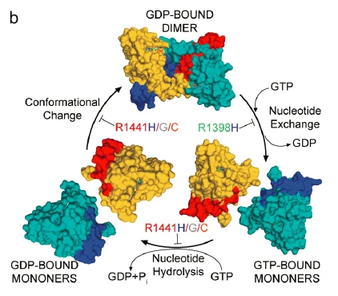
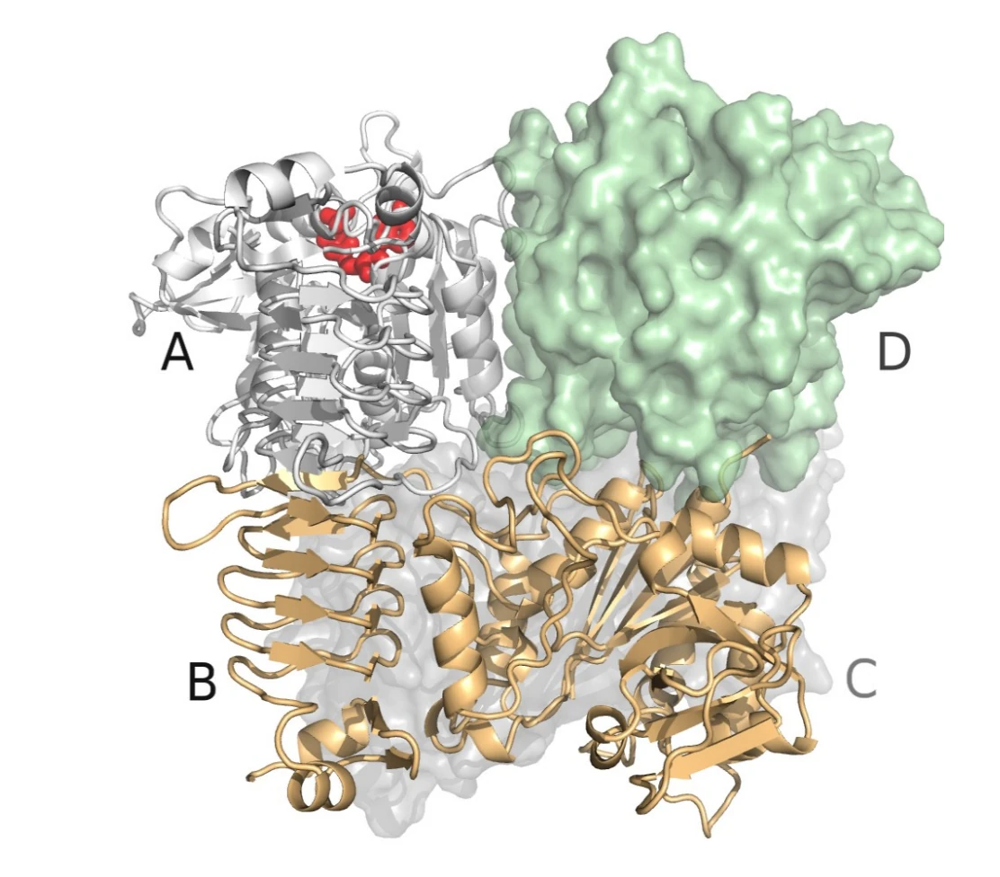
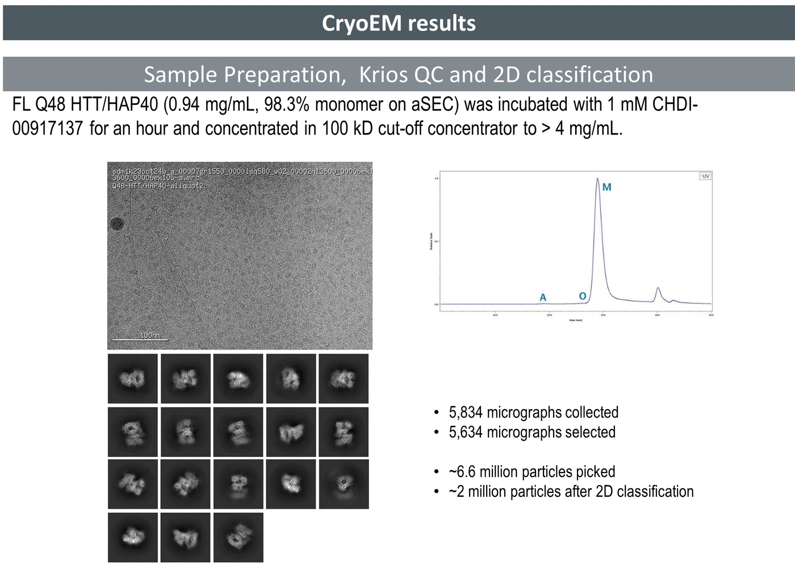
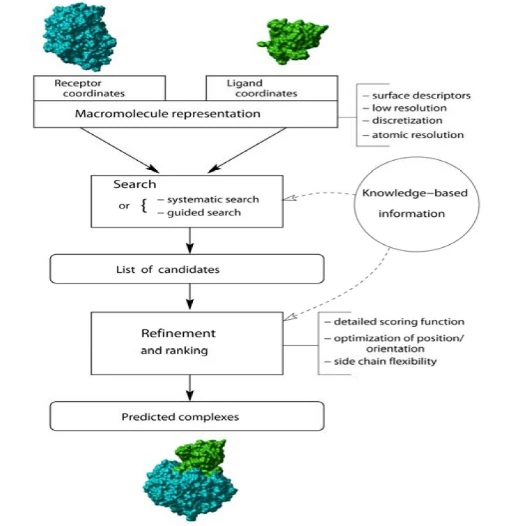
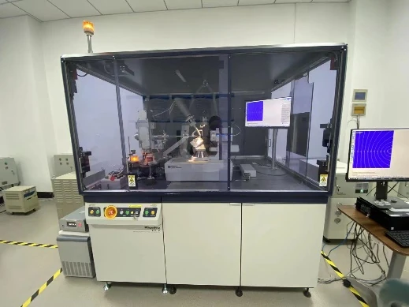
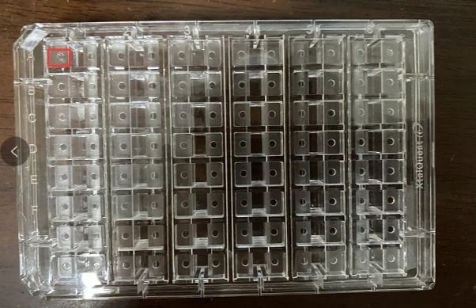

Research archive · 12 projects
The science behind the record.
A project-by-project archive of structural biology, enzymology, and drug discovery — the proteins, the people, and the experiments behind the papers and programs.
- Protein structures
- 40+
- Curia projects
- 30+
- GlgC structures
- 20+
- Project pages
- 12
Projects
Follow the structures.
Each page includes the project context, my role, the collaborators, the data, and the figures adapted from my 2024 research summary.
PhD · Loyola University Chicago
2 projects
YczR
YczR: a new PLP-dependent regulator in K. pneumoniae
Solving the regulator-domain structure of a newly identified MocR/GabR-family transcription factor — and building assays to test whether it could become an antibiotic target.


PTP1B
PTP1B: the redox states of a diabetes target
A serendipitous vanadium complex revealed missing redox chemistry at the catalytic cysteine of PTP1B, a major obesity and type 2 diabetes target.

Postdoc · Indiana University
2 projects
PINK1
Human PINK1: expressing and structuring a Parkinson's target
The human PINK1 structure was still unsolved when I started. This project built the expression, purification, and structural pipeline to change that.

LRRK2-ROC
LRRK2-ROC: the dynamic domain
Solving the ROC domain of Parkinson's-linked LRRK2 by NMR — a first for me, and a window into its nucleotide-driven dynamics.
Academic collaboration · Lanzhou University
1 projectAcademic collaboration · Loyola University Chicago
2 projects
NfoR mechanism
NfoR: chromate reductase or FMN reductase?
More structures and kinetics to resolve what NfoR actually does — and how electrons move through its flavin cofactor.


GlgC
GlgC: allosteric synergy in ADP-glucose pyrophosphorylase
More than 20 structures of a central starch and glycogen enzyme, mapping two AMP sites, activator promiscuity, and an entropy-driven catalytic mechanism.
Academic collaboration · UT Austin
1 project
Academic collaboration · Northwestern University
1 projectAcademic collaboration · Universidad Nacional del Litoral
1 project
Industry · Curia Global
2 projects
Huntingtin
Huntingtin: high-quality protein and a 2.6 Å cryo-EM structure
Turning a difficult purification into a reproducible platform — and using it to enable a 2.6 Å HTT/HAP40/ligand structure.

AI antibody
AI antibody design, CADD, and mRNA expression
A cross-functional program spanning data curation, AI antibody design, computational evaluation, and wet-lab expression testing.
People
The collaborators behind the work.
Fourteen project leads and scientific collaborators whose labs, reagents, and expertise made this work possible.


Leadership
Science is also operations.
Between 2013 and 2020 I managed ten concurrent crystallization projects across five laboratories, solved more than 40 structures, and remotely helped a collaborator build a crystallography team.



- Concurrent projects
- 10
- Partner laboratories
- 5
- Structures solved
- 40+
- Startup launched
- 1
Source and disclosure. Adapted from Dr. Zheng's April 2024 research summary. Some projects contain unpublished or client-related material; confirm disclosure permissions before reusing images or project details.